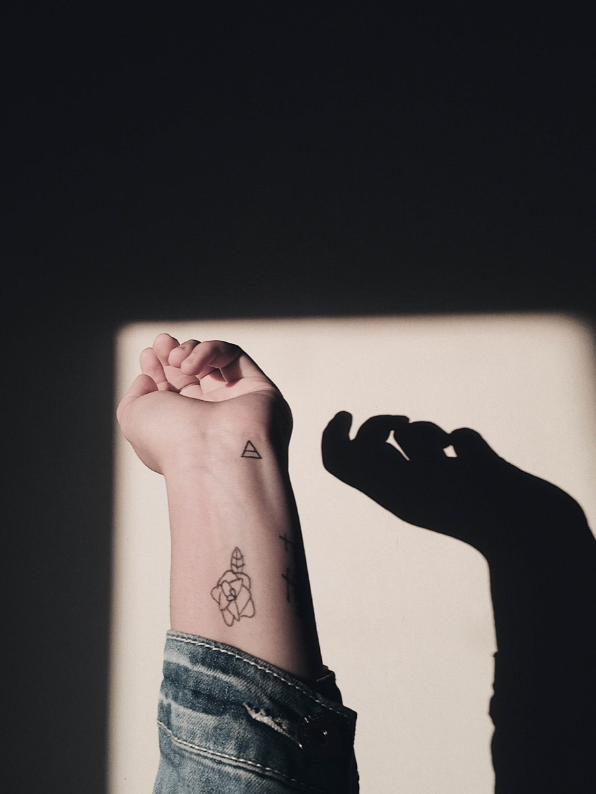
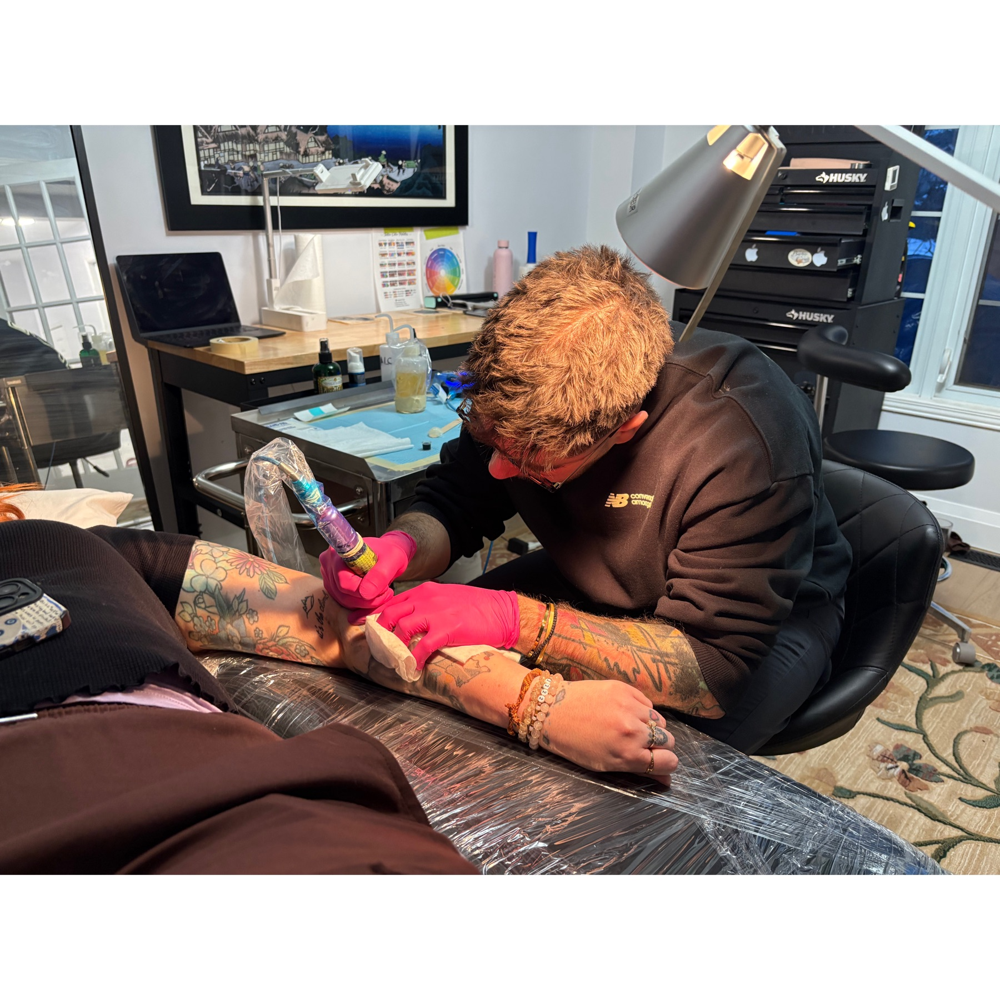
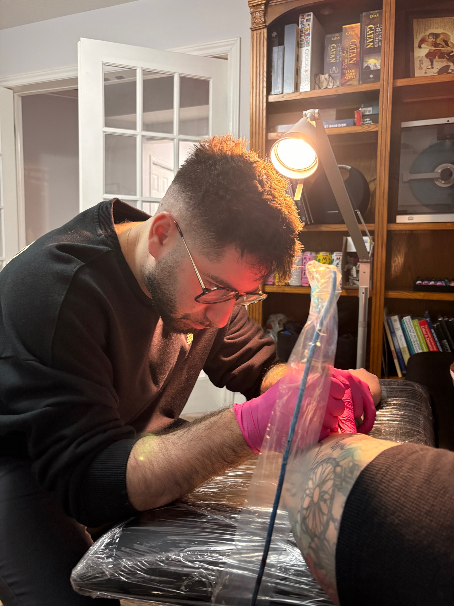

Selected work
the work
Custom, minimalist and fine-line pieces — abstract ideas, small meaningful marks, and quiet linework. New pieces land on Instagram first.



The living gallery
see the latest
on instagram
Every new piece, healed shots and flash drops go up on Instagram first. Follow along, then reach out about your own idea.